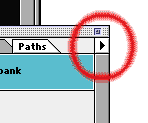

Click on the arrow pictured above to get the popup menu which gives you options like New Path and Make Selection.
Entire article and photographs copyright © 1998 Dan Wilga. All rights reserved. May not be reprinted without permission.